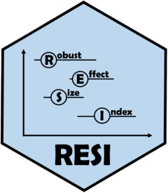

Hybrid plasmode calibration simulation for three-level mixed-model RESI
Source:R/mixed_simulations.R
hybridPlasmodeSim.RdFits `formula` (ML) to `data` and treats the fitted fixed effects and variance components as the data-generating truth. Each replicate (i) resamples `n_schools` school covariate profiles with replacement and, within each, students with replacement in proportion to the observed school size so that the average is `n_per_site`; (ii) draws school and student random effects with replacement from the BLUP pools, each centred and rescaled to the fitted variance component, plus Gaussian residuals; (iii) refits by REML and computes `resi_pe(level = 2)` with the model-based covariance. RESI and per-unit SE targets are the Lyu-Welsh g, m -> Inf limit at the full-data ML estimates ([lyuLimitResi()]).
Usage
hybridPlasmodeSim(
formula,
data,
school = "schoolid",
child = "childid",
n_schools = c(15, 30, 60, 100),
n_per_site = c(25, 100, 200),
nsim = 1000L,
mc.cores = 1L,
seed = 2026,
control = lme4::lmerControl(optimizer = "bobyqa", optCtrl = list(maxfun = 2e+05)),
rep_fun = NULL,
keep_reps = !is.null(rep_fun)
)Arguments
- formula
Model formula with a school random intercept and child-level random effects, e.g. `y ~ X + (1 | school/child)` or `y ~ X + (1 | school) + (year | child:school)`.
- data
Data frame containing the variables in `formula`.
- school, child
Names of the school and child id columns of `data`.
- n_schools, n_per_site
Vectors crossed to form the simulation grid.
- nsim
Number of replicates per grid cell.
- mc.cores
Number of cores for [parallel::mclapply()] over replicates.
- seed
Seed (with the "L'Ecuyer-CMRG" generator) for reproducibility.
- control
`lme4::lmerControl()` used for all fits.
- rep_fun
Optional `function(fit, design)` evaluated on each replicate fit; its return value is stored as `extra` in the replicate output.
- keep_reps
Logical; return the per-replicate output.